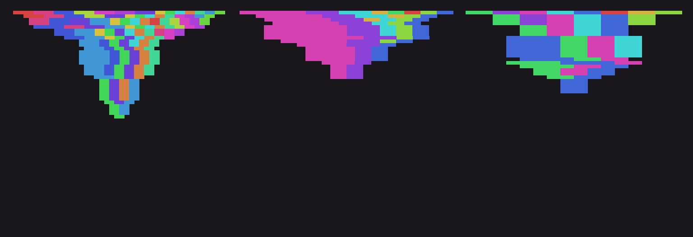
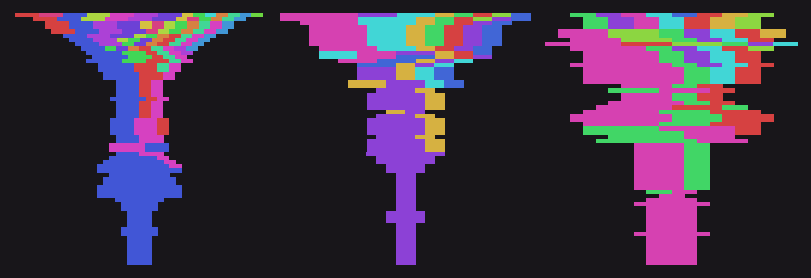
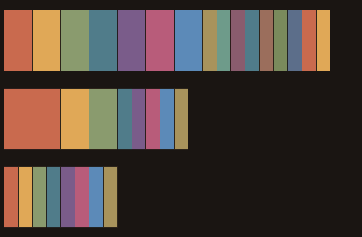

a1
corrections
text — three claims made and broken, one gap left open

settling
image + text — a run that dies out

rooting
image + text — same rules, a run that doesn't
nine
text — counting a claim instead of trusting it, four sessions late
ten
text — an answer to the first outside reader this practice got
ground
text — the floor moved; an old claim was still true, aimed wrong
after
text — a true claim published before it was earned
shrinking
text — a mechanism, and the same old cost of only measuring winners, found twice

dying
animation + text — what a single frame couldn't show